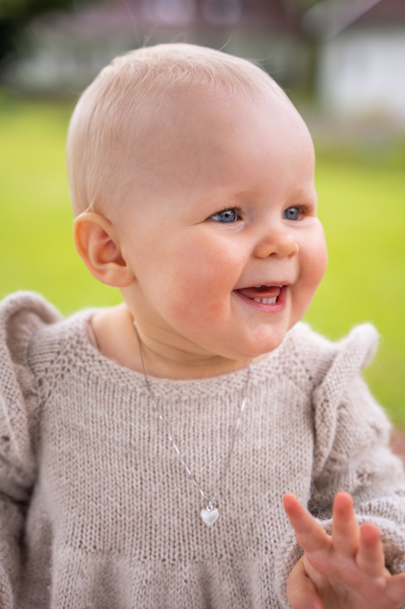
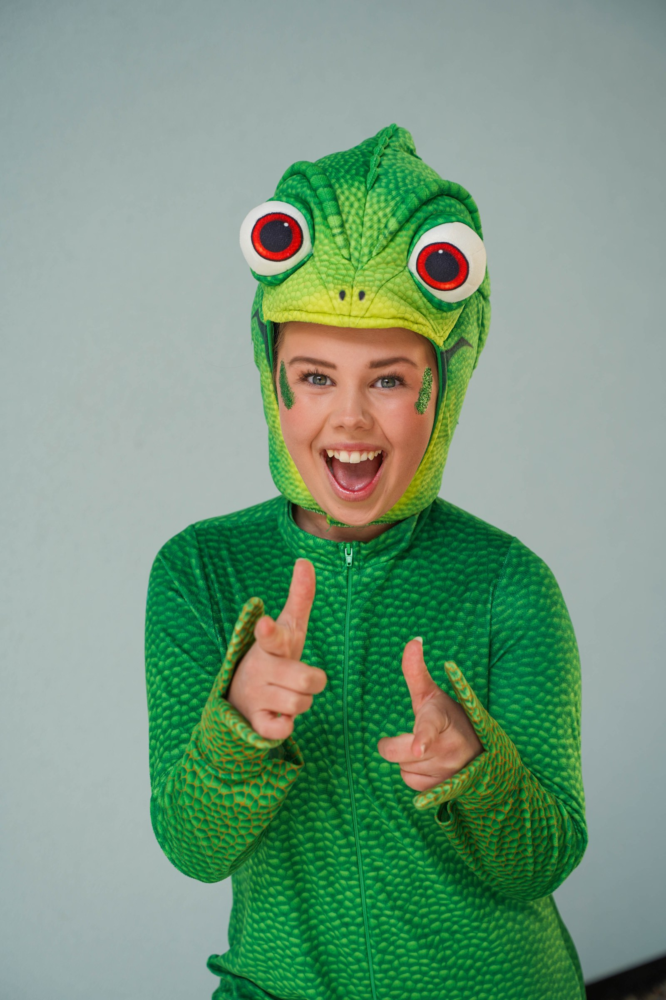

Fra idé til ferdig
Du trenger ikke ha en ferdig plan. Jeg kan hjelpe med ideer, finne et uttrykk som passer og ta hånd om foto, filming og klipp.
Ta kontakt






Bak inmoment
Hei, jeg heter Eline! Jeg er oppvokst i Kristiansand og har alltid likt å være kreativ og kunne skape noe gjennom film og foto.
Jeg har en bachelor i film og TV fra Westerdals og jobber i dag som frilanser med ulike prosjekter innen film, TV og foto. Ved siden av oppdragene jobber jeg også med egne prosjekter.
Eline Ødegaard
Tjenester
Trenger du bilder, en video eller hjelp med klipp? Jeg hjelper deg med det du trenger — og med ideene, hvis du vil.
Du trenger ikke ha en ferdig plan. Jeg kan hjelpe med ideer, finne et uttrykk som passer og ta hånd om foto, filming og klipp.
Ta kontaktBilder av mennesker, produkter og det som skjer. Fra headshots og familiebilder til bryllup, arrangementer og innhold til bedrifter.
Se fotoMusikkvideo, bryllupsfilm eller innhold til bedriften din. Jeg kan filme og klippe, eller sette sammen opptak du allerede har.
Se prosjekterinmoment
Jeg liker å skape sammen med mennesker — dele ideer, prøve oss frem og se hva vi får til.